Growing a cycling community
Global Cycling Network (GCN) is the world’s largest online cycling channel, and the GCN app is for anyone interested in the world of cycling.
The app has 2 core offerings, a live racing, on-demand films & documentary streaming service. The app is also a place to share and interact with a wide range of cycling content and other cycling enthusiasts. Below are two projects I worked on in these areas;
Shortcuts:
-
Growing community in the GCN app
Improving the connectivity of the app user base to increase monthly active users.
-
Launching a streaming service
Educating users on GCN+, our new on-demand films & documentary streaming service
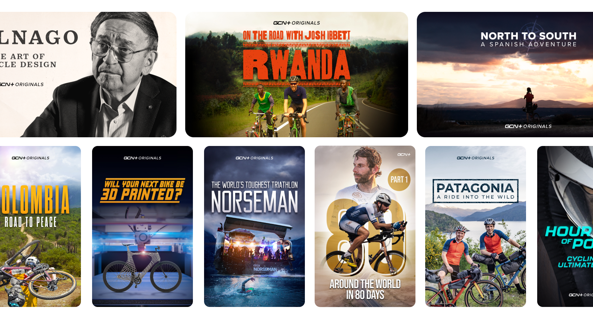
Problem space
The GCN app social experience does not have product-market fit. Our users are not following each other, and we are not delivering a value proposition around following that encourages users to do it. Our users cannot find real-world friends, and cannot easily make new connections by finding people with similar interests.
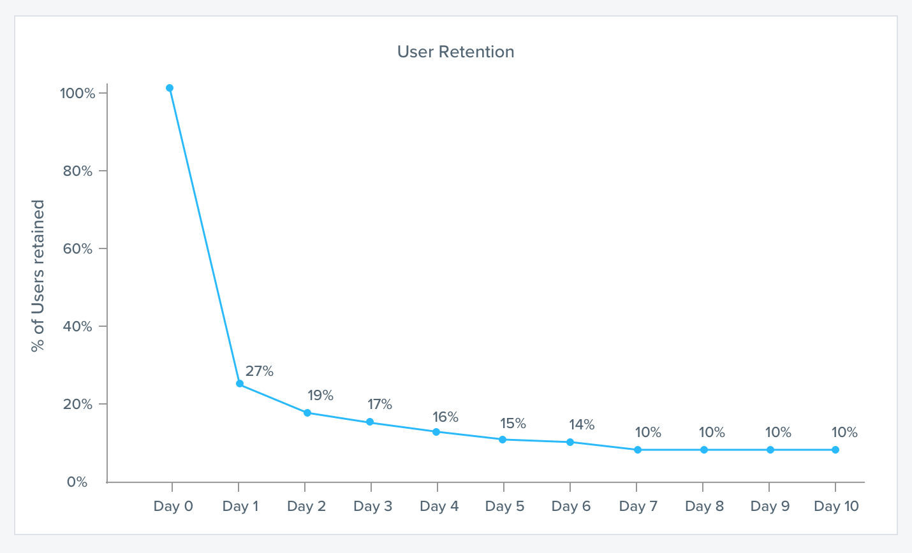
Our hypothesis is that by improving the connectivity of the user base (by increasing the avg number of followers people have) will mean users see content that is more relevant to them. This will lead to a more personalised & valuable app experience and higher retention rates for new users.
Research
Working with the UX research team & analysing previous user interviews as well as feature requests & support tickets, we discovered that users were struggling to find other users and content in the app.
Compared to other issues, a way to search content was the most reported issue in our feedback tracker. With the upcoming launch of our films and live race streaming service, a search feature was also a strong strategic move to improve the product, allowing users to find not only users, but video content as well.
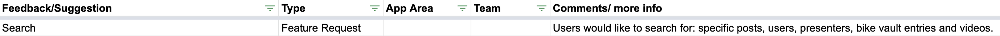
I worked closely with product and engineering teams to agree on a high level flow and information architecture for the search feature, so that we were aligned on functionality before I went into prototyping and testing with users.
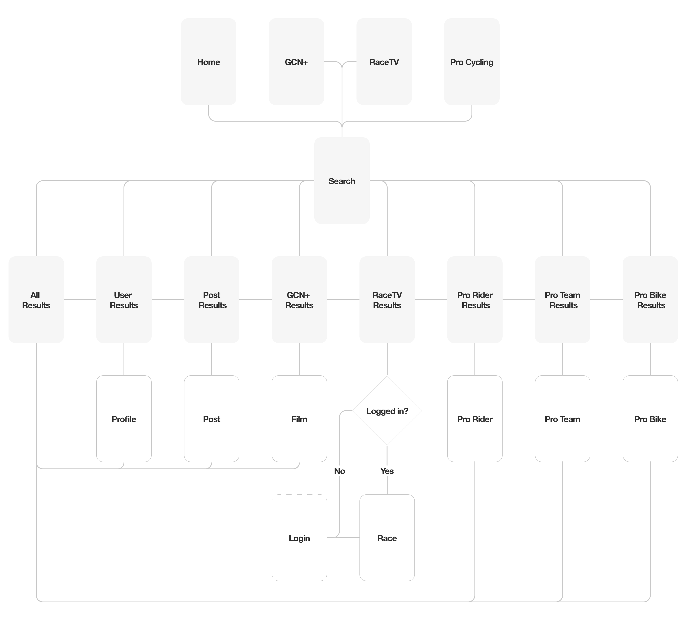
Testing prototypes
I produced an initial prototype to use in moderated user testing with Figma Mirror to create a realistic native experience. Participants were given the tasks to complete using the prototype, whilst i observed and asked follow-up questions. Testing was focused on navigation and layout of search results to gather feedback on proposed information architecture.
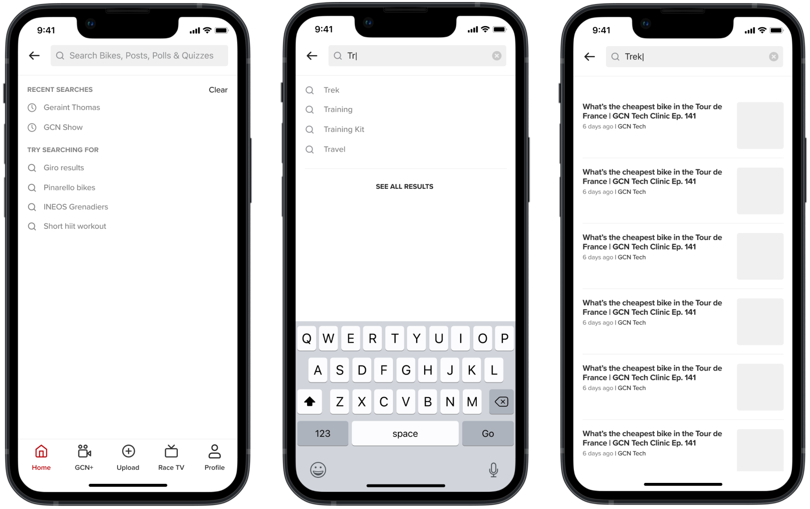
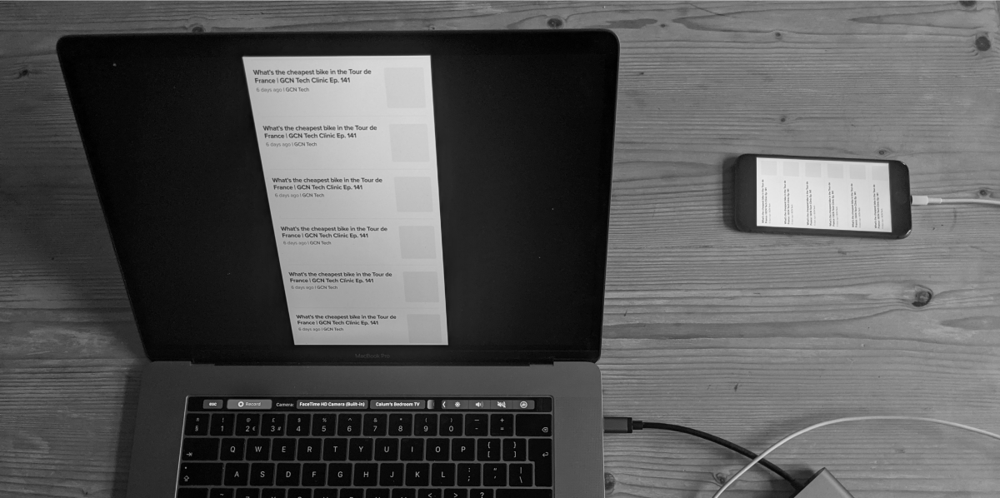
Beta users
As well as moderated user testing, we posted an unmoderated test link to our beta users to get additional insight and feedback on our prototype.
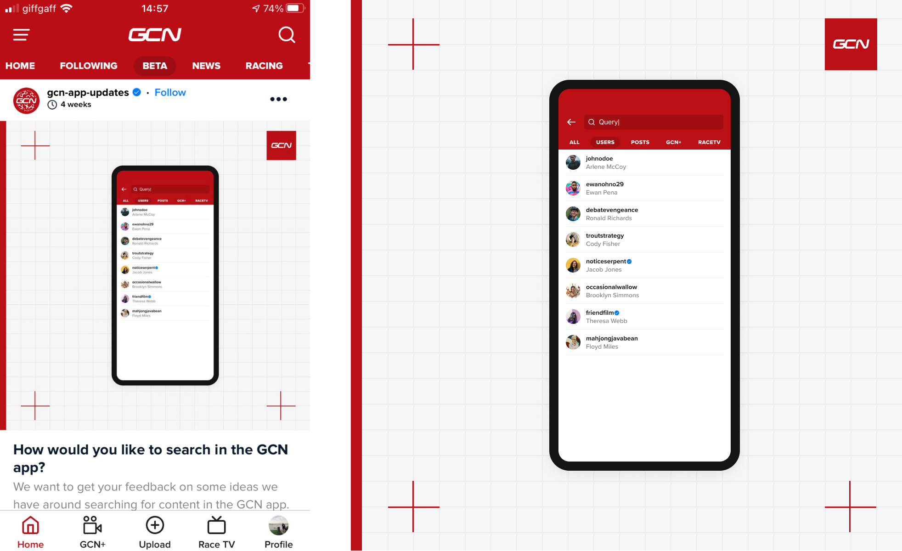
After analysing the results of our initial testing, we found that participants were struggling to find the specific result they were looking for amongst the range of results that were returned.
Participants felt there should be a better way to narrow down and filter results more categorically. With this feedback in mind I updated the prototype to include result filtering.
Updated designs
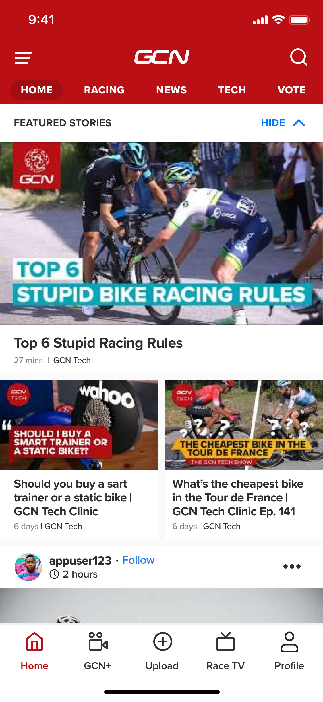
Users could access the search feature from the top app bar throughout the app
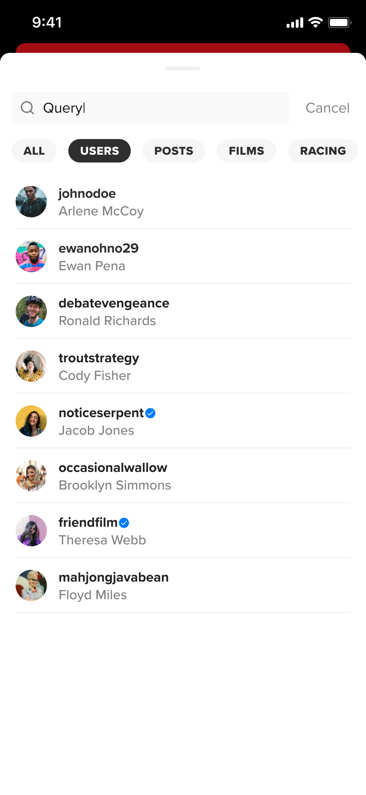
Filters were used to allow more targeted search results
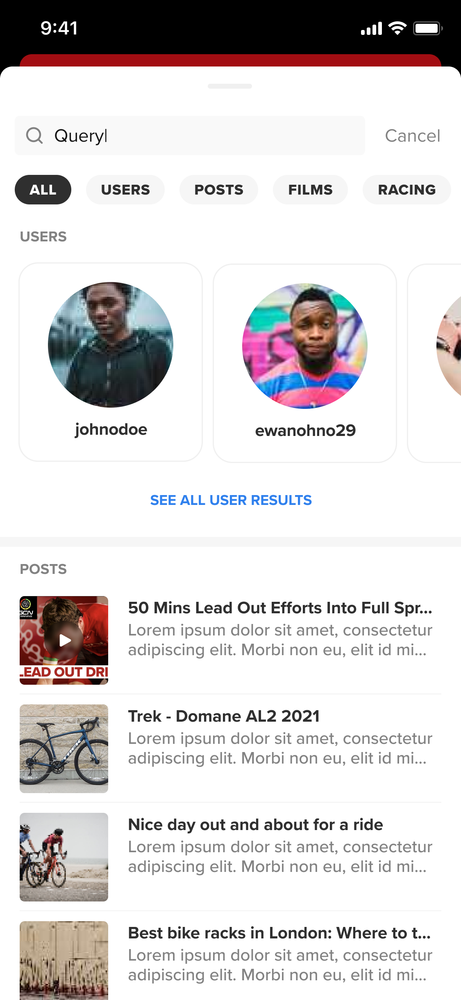
'All' filter was added to give users a complete overview of their search for content across the entire app.
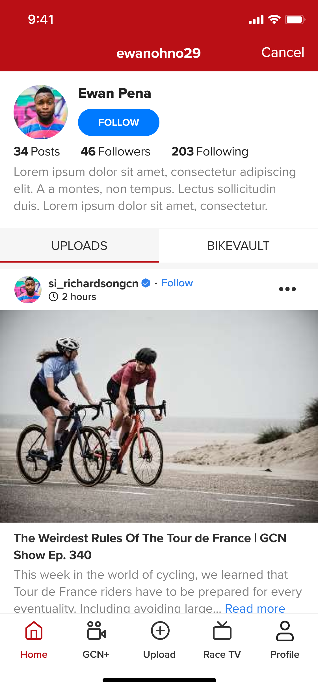
The search feature allowed users to find other profiles and follow them with the aim to increase engagement.
Learnings
One key learning was that users expected more filtering options to narrow their searches. While our initial design focused on broad discovery, feedback showed that users wanted more precise controls. If I were to iterate further, I’d explore more advanced filtering and personalization options to make search results even more relevant. Additionally, our research confirmed that user-to-user search was highly valuable, which opens opportunities to further enhance social connectivity within the app.
Impact & takeaways
Over the course of the quarter following the release of the initial search feature, the average number of followers for each active user in the GCN app increased by over 200%. We found that a significant portion of searches were for other users, indicating that search was directly addressing the discovery problem. User feedback also reinforced this, with several participants mentioning that they had been able to find and follow real-world friends for the first time. We also saw a 42% increase in social interactions (e.g., likes, comments), suggesting that improved discoverability led to greater engagement. While it’s too early to measure long-term retention impact, we plan to analyze this over the coming months.
Further initiatives
Following the release of the search feature, we refined, tested, and launched additional features to further drive engagement and new user sretention.
OnboardingWe introduced a streamlined onboarding flow, enabling users to select their interests from the start for a more personalized app experience.
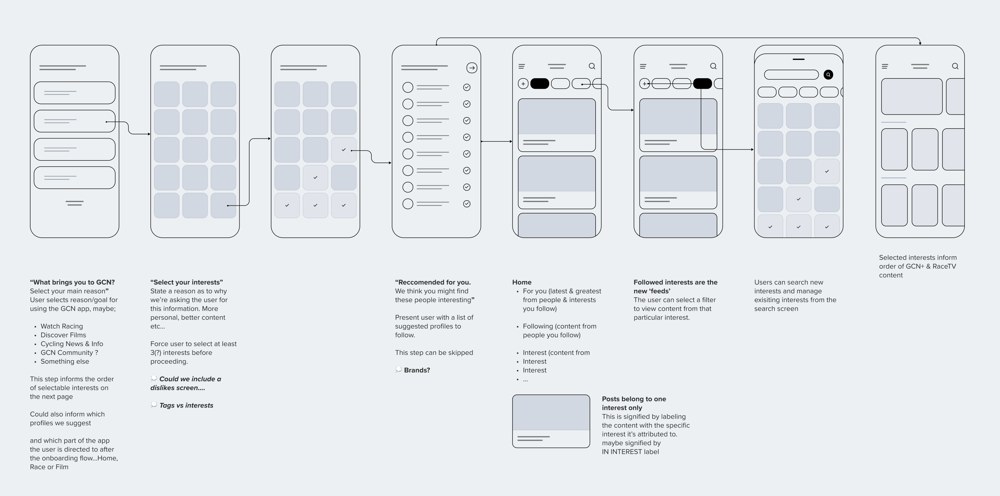
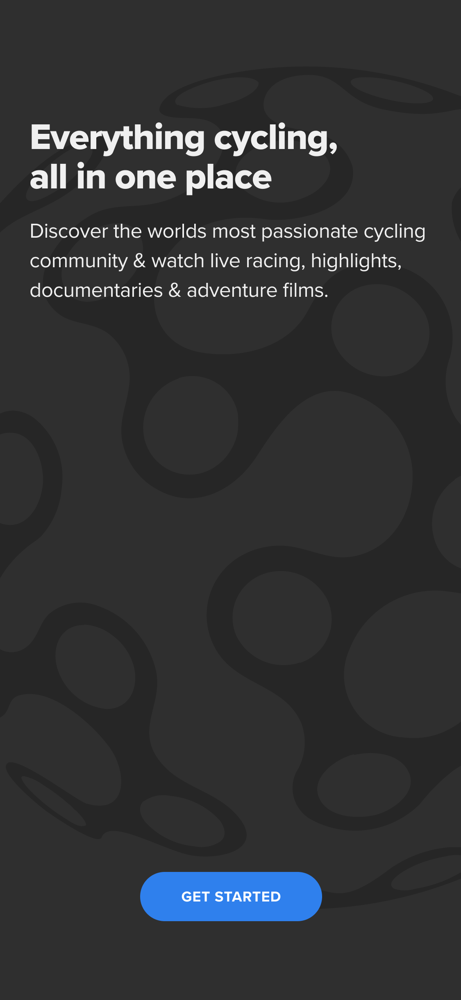
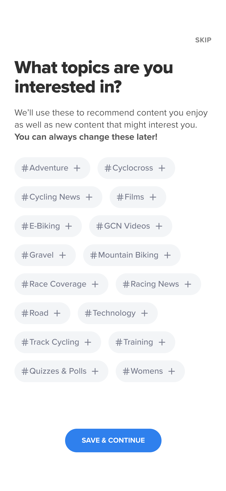
Additionally, we enhanced the social feed by incorporating diverse content types, enabling users to discover relevant content more easily, explore their interests, and connect with other users.
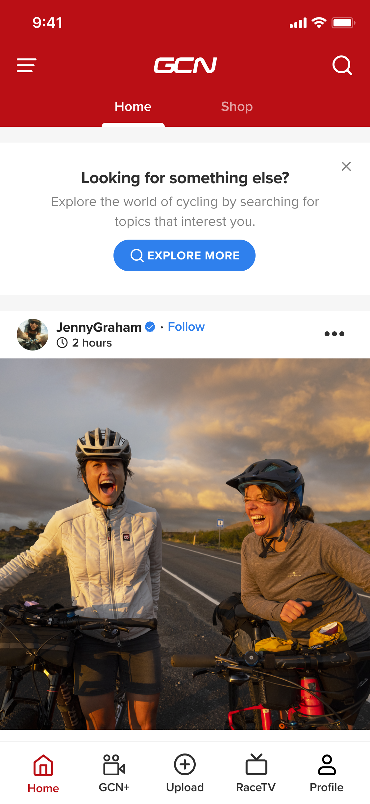
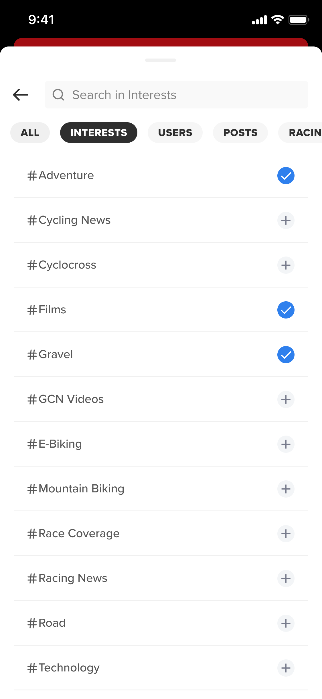
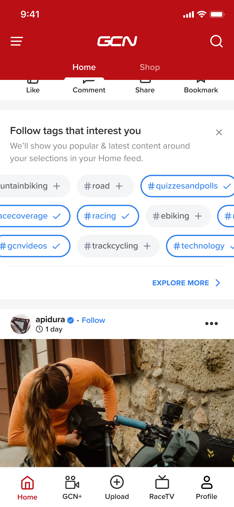
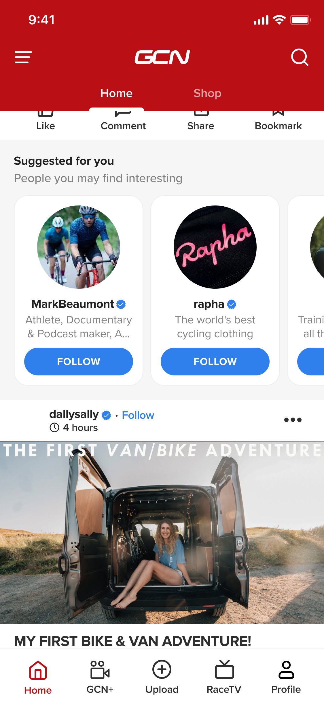
Launching GCN+
GCN+ is Global Cycling Network’s live racing, on-demand films & documentary streaming service. This subscription service is available to purchase worldwide & view on web, mobile, tablet & smart TV. Prior to GCN+, the subscription only featured cycling racing and was branded Race Pass.
Problem space
Despite the huge range of cycling races included in the Race Pass subscription, analysing app store reviews, survey data & user interviews with existing subscribers, the main theme of feedback was that it was difficult to understand which races were available to them in their country.
When it came to the task of combining our racing and film content into the new GCN+ subscription, the challenge was how we fully educate users on our proposition so that they feel informed enough to subscribe?
Research
We hosted Hotjar surveys on the existing Race Pass website, gaining feedback from users on the current state of the product and also recruiting test participants for unmoderated user testing of prototypes. I performed thematic analysis on this user feedback to gain a better understanding of the main pain points. I also began exploring how other streaming subscription services showcased the breadth of content they had on offer.
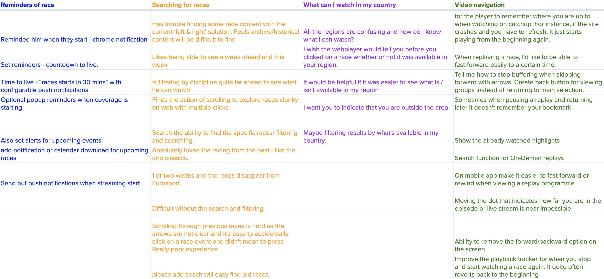
"It would be helpful if it was easier to see what is / isn't available for me to watch"
The result of my intital research was that potential subscribers wanted to be clear on what films & races they could watch with their subscription package. Other streaming platforms such as Amazon Prime Video allowed users to explore content before being asked to subscribe.
Early design process
After working with stakeholders & product managers to define the problem space and requirements, I produced high level wireframes and user flows to share with engineering and product teams to get feedback on initial thinking.
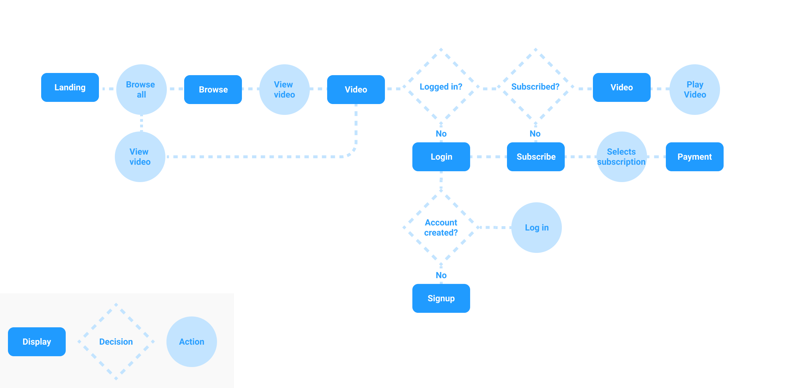
Testing prototypes
By sharing these prototypes with existing subscribers early on in the design process, we were able to gain feedback whether users felt informed enough to subscribe and identify any areas of friction in our subscribe & payment flows.
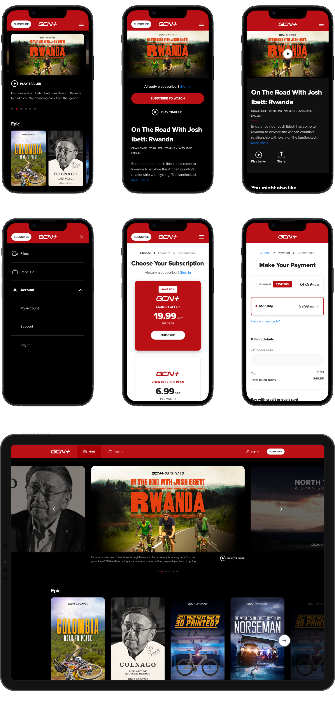
Testing our prototype with users allowed us to validate our direction for the product. Users found exploration and subscription tasks easy but felt better categorisation of content and the ability to add titles to a personalised list would be beneficial.
Impact & takeaways
We launched GCN+ successfully across web, mobile & TV, surpassing subscriber targets by 50%. By continuously talking to users throughout the launch phase, we were able to further refine and prioritise further updates to the product.